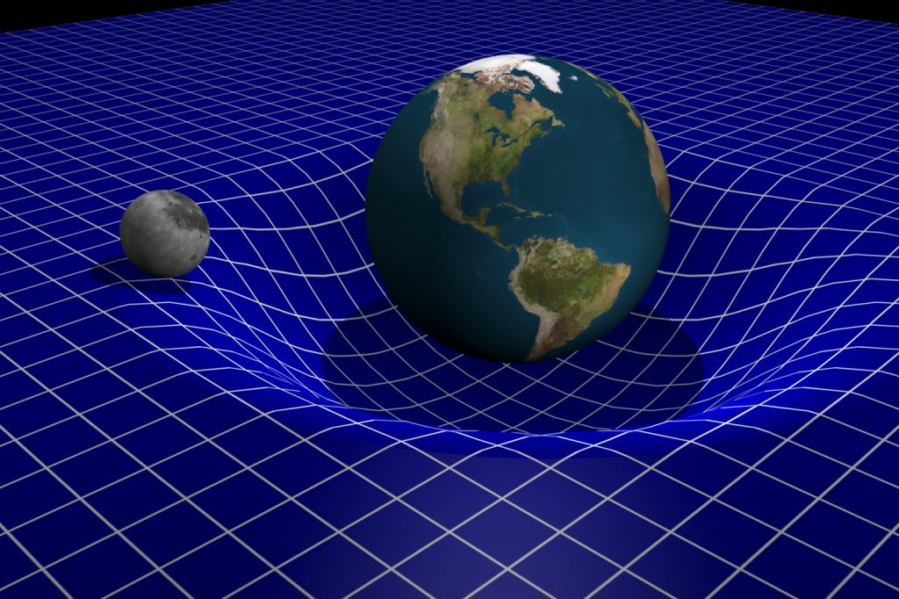
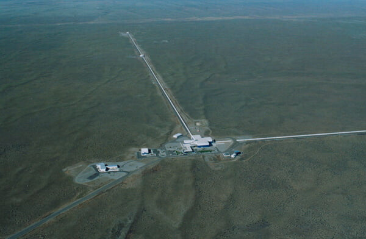

လွန်ခဲ့တဲ့ နှစ်ပေါင်း ၁၀၀ ခန့်က အိုင်းစတိုင်းက ရူပဗေဒ နယ်ပယ်က နယူတန်ရဲ့ ဆွဲအား နိယာမကို တော်လှန်ပစ် ခဲ့တဲ့ နှိုင်းရ နိယာမ (General Theory of Relativity) ကို တင်ပြခဲ့ ပါတယ်။
အိုင်းစတိုင်းရဲ့ အယူအဆ အရ ဆွဲငင်အား ဆိုတာ အရာ ဝတ္ထု တွေရဲ့ ဒြပ်ထုကြောင့် သူ့ပတ်ဝန်းကျင်က ဟင်းလင်းပြင်နဲ့ အချိန်ကို ကွေးကောက်သွားစေပြီး ဖြစ်ပေါ်လာတဲ့ သဘာဝ သဘောတရား ဖြစ်တယ်လို့ ဆိုပါတယ်။ ဒီ သဘောတရား အရ ဒြပ်ထုရှိတဲ့ အရာဝတ္ထုတွေရဲ့ ပတ်ဝန်းကျင်က ဟင်းလင်းပြင်ဟာ ကွေးနေပါတယ်။ ဒြပ်ထု ကြီးရင် ကြီးသလို ဒီ အကွေးကလဲ ပိုပြီး ကြီးပါတယ်။
ဒီ သဘောတရားကို အခြေခံပြီး အိုင်းစတိုင်းက အကယ်လို့သာ ဒြပ်ထုရှိတဲ့ အရာဝတ္ထု နှစ်ခု တစ်ခုကို တစ်ခု လှည့်ပတ် နေမယ်ဆို ဒီ အရာနှစ်ခုရဲ့ ပတ်ဝန်းကျင်က ဟင်းလင်းပြင် ထဲမှာ ဘာဖြစ်လာမလဲ ဆိုတာကို ဆက်လက် တွေးဆ ခဲ့ပါတယ်။

ဒီလို ဒြပ်ထု နှစ်ခု တစ်ခုကို တစ်ခု ပတ်တဲ့အတွက် သူတို့ရဲ့ ပတ်လည်က ဟင်းလင်းပြင်ဟာလဲ ဒြပ်ထုရဲ့ တည်နေရာကို လိုက်လို့ ကွေးသွားလိုက် ပြန်ဆန့်သွားလိုက် ဖြစ်လာပါတယ်။ ဒီလို ဟင်းလင်းပြင် ကွေးပြီး ကျုံ့သွားလိုက် ပြန့်ထွက်သွားလိုက် ဖြစ်တာဟာ ရေ မျက်နှာပြင်မှာ လှီုင်းလေးတွေ ပြန့်သွား သလိုမျိုး အာကာသ ဟင်းလင်းပြင်ကြီးထဲကို ပြန့်ထွက်သွားပါတယ်။
အင်အားပြင်းထန်တဲ့ ဆွဲငင်အားလှိုင်းတွေ ဘယ်အချိန်ဖြစ်လာသလဲ
အင်အား ပြင်းထန်တဲ့ ဆွဲငင်အား လှိုင်းတွေဟာ အမြဲတော့ ထွက်ပေါ် မလာပါဘူး။ အလင်းနှစ် သန်း ထောင်ပေါင်း များစွာအထိ ရောက်တဲ့ အင်အားပြင်း ဆွဲငင်အား လှိုင်းတွေဟာ အောက်ပါ အခြေအနေတွေမှာ ထွက်ပေါ်လာမယ်လို့ ဆိုပါတယ်။- ကြယ်တွေ ဆူပါနိုဗာ ပေါက်ကွဲမှုကြီး ဖြစ်တဲ့ အခါ
- ကြီးမားတဲ့ ကြယ်ကြီးတွေ အချင်းချင်း နီးကပ်စွာနဲ့ ပတ်နေတဲ့ အခါမျိုး
- Black hole တွင်းနက်ကြီး နှစ်ခု တစ်ခုကို တစ်ခု ပတ်နေတဲ့ အချိန်နဲ့ ပေါင်းမိသွားတဲ့ အချိန်
ဒါဆို ဆွဲငင်အားလှိုင်းတွေရှိကြောင်း ဘယ်လိုသိသလဲ
အိုင်းစတိုင်းက ဟောကိန်းထုတ်ပြီး နှစ်၁၀၀ နီးပါးအကြာ ၂၀၁၅ ခုနှစ်မှာ သိပ္ပံပညာရှင် တွေဟာ ပထမဆုံး အကြိမ်အဖြစ် ဆွဲငင်အား လှိုင်းတွေကို ရှာဖွေ ထောက်လှမ်းနိုင် ခဲ့ကြပါတယ်။ LIGO (Laser Interferometer Gravitational-Wave Observatory) လို့ အမည်ပေးထားတဲ့ လေဆာ ရောင်ခြည်သုံး တိုင်းတာရေး ကိရိယာ ကြီးနဲ့ တိုင်းတာခဲ့ ကြတာ ဖြစ်ပါတယ်။ပထမဆုံး တိုင်းထွာရရှိခဲ့တဲ့ ဆွဲငင်အား လှိုင်း တွေဟာ တွင်းနက်တွေ အချင်းချင်း တိုက်မိရာက ထွက်ပေါ်လာကြတဲ့ ဆွဲအားလှိုင်းတွေ ဖြစ်ပါတယ်။ ဒီ ပထမဆုံး တိုင်းထွာရရှိတဲ့ တွင်းနက်တွေ အချင်းချင်း တိုက်မိိတဲ့ ဖြစ်စဉ်ဟာ လွန်ခဲ့တဲ့ နှစ်သန်း ၁,၃၀၀ လောက်က ဖြစ်ခဲ့တာပါ။ ဒီ ဖြစ်စဉ်က ထွက်ပေါ်လာတဲ့ ဆွဲအားလှိုင်းတွေဟာ ၂၀၁၅ ကျမှ ကမ္ဘာကို ရောက်ရှိလို့ လာပါတယ်။
ဒီ့အရင် မတိုင်မီက စကြာဝဠာ ထဲက ကြယ်တွေ၊ ဂြိုဟ်တွေနဲ့ အခြား ဂလက်ဆီတွေ၊ Black Hole တွေရဲ့ အကြောင်းကို သူတို့ဆီက လာတဲ့ အလင်းကို အဓိက စူးစမ်းပြီး လေ့လာကြရတာ ဖြစ်ပါတယ်။ ဒါပေမယ့် အခုတော့ အလင်းအပြင် နောက်ထပ် လေ့လာစရာ တစ်ခု တိုးလာပါပြီ။ ဒီ ဆွဲငင်အား လှိုင်းတွေကို လေ့လာခြင်း အားဖြင့် စကြာဝဠာရဲ့ အကြောင်း ပိုသိလာမှာ ဖြစ်သလို ဆွဲငင်အားနဲ့ ပါတ်သက်လို့လဲ ပိုသိလာမယ်လို့ ဆိုပါတယ်။
ဆွဲငင်အားလှိုင်းတွေကို ဘယ်လိုရှာဖွေသလဲဆွဲငင်အား လှိုင်းတွေ ကမ္ဘာကို ဖြတ်သွားတဲ့ အခါ ကျွန်တော်တို့ ပတ်ဝန်းကျင်က ဟင်းလင်းပြင် (Space) ဟာ ကျုံ့လိုက် ကျယ်လိုက် ဖြစ်လာပါတယ်။ ဒါပေမယ့် ဆွဲအားလှိုင်းတွေက အလွန် အားနည်းတာမို့ ဒီလို ဟင်းလင်းပြင် ကျုံ့လိုက် ကျယ်လိုက် ဖြစ်တာကို အလွယ်တကူ မသိနိုင်ပါဘူး။
ဆွဲအားလှိုင်းတွေ ထောက်လှမ်းတဲ့ LIGO တိုင်းထွာရေး ကိရိယာမှာ L ပုံစံ ထောင့်မှန် ချိုးထားတဲ့ လက်တံ နှစ်ဖက် ပါဝင်ပါတယ်။ ဒီ လက်တံ တစ်ခုစီဟာ အလျှား ၂ မိုင် ကျော်ပါတယ်။ ဒီ လက်တံ တွေထဲမှာ လှိုဏ်ခေါင်း ထည့်သွင်း တည်ဆောက်ထားပြီး အထဲမှာ လေဆာ အလင်းတန်း ထိုးထားပါတယ်။
လှိုင်ခေါင်းတွေရဲ့ အစွန်းမှာ လေဆာတန်းကို အလင်းပြန် ပေးမယ့် မှန်ချပ်တွေ တပ်ဆင် ထားပါတယ်။ ဒီ မှန်ချပ်တွေက ပြန်လာတဲ့ လေဆာတမ်းကို ဖမ်းယူပြီး လက်တံ နှစ်ဖက်က ရတဲ့ လေဆာတမ်း နှစ်ခုကို တိုက်ကြည့်ပါတယ်။

ဒီလို ရှည်လိုက် တိုလိုက် ဖြစ်လာတဲ့ အချိန် လှိုဏ်ခေါင်းထဲက ဖြတ်သွားတဲ့ လေဆာတန်းတွေရဲ့ သွားရတဲ့ ခရီး အကွာအဝေးကလဲ များလိုက် နည်းလိုက် ဖြစ်နေမှာ ပါ။ ဒီတော့ ဒီလှိုဏ်ခေါင်းကို ဖြတ်ပြီး ပြန်ထွက်လာတဲ့ လေဆာတန်း နှစ်တန်းဟာလဲ ထပ်တူ ကျတော့မှာ မဟုတ်ပါဘူး။ ဒီလို ဖြစ်တာကို တိုင်းတာရေး ကိရိယာ တွေနဲ့ တိုင်းထွာပြီး ဆွဲငင်အား လှိုင်းတွေ ရှိမရှိ ရှာဖွေကြတာ ဖြစ်ပါတယ်။
— မောင်သူရ (သိပ္ပံ) —
Reference: What Is a Gravitational Wave? | NASA